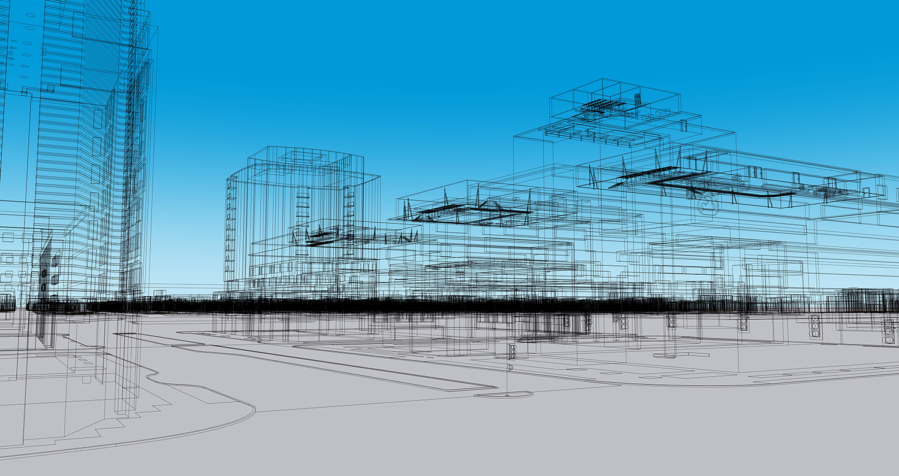
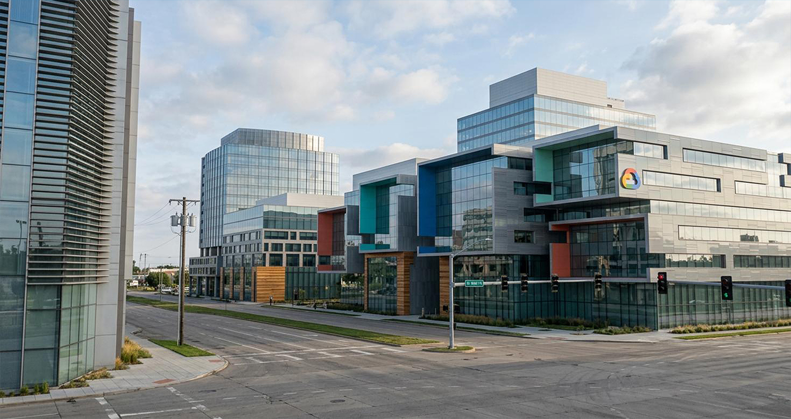

Scroll slowly. The technical model gradually transforms into the finished visualization.


Geometry, proportions and spatial relationships are established first.
This section can lead into the rest of the project, project description, methodology, GIS map, or another interactive scene.